Recently, I looked at my schedule and the spaces I have in which to fit all that needs to get done, and the two weren’t matching up.
The time had come to seek refuge in the place that has been a helpful harbor in the packed pockets of life. Gratefully, the sisters at Carmel of Mary Monastery were happy to have me return.
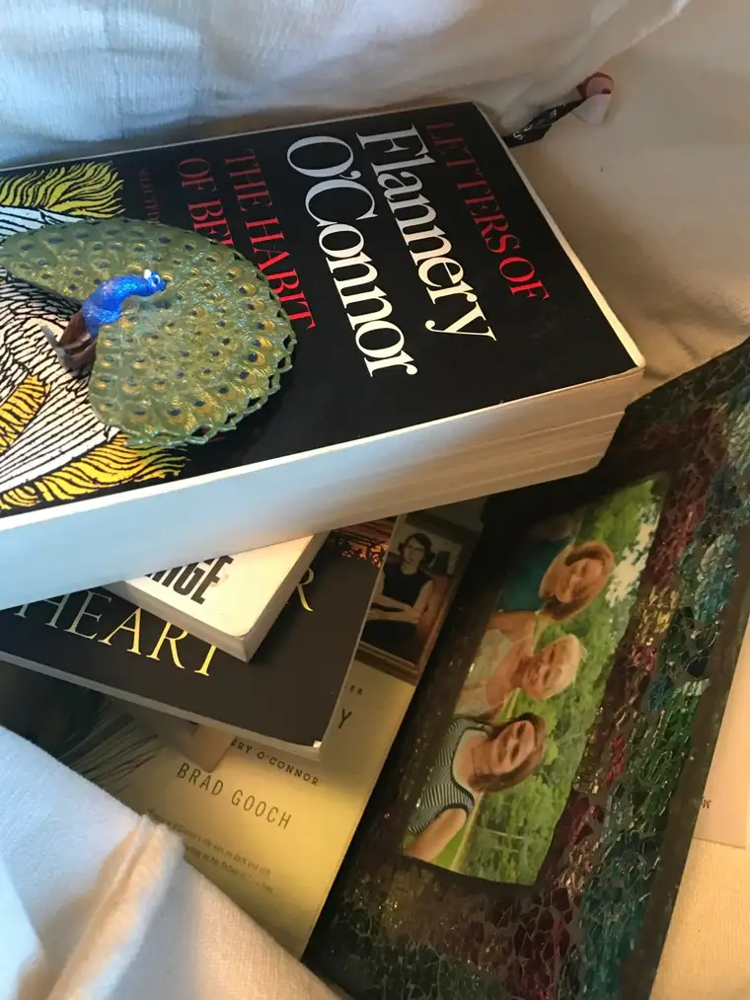
And so on Friday, I packed what I needed for the weekend, and drove off into the sunshine headed for Carmel, as I have been blessed to do often these past years. Upon reaching the sacred grounds of the cloister, almost reflexively, I released a healing inhale-deep exhale.
Before curling around to the guest house, I stopped the car, just outside the cloister. Something had caught my attention at a nearby residence — a cluster of wild turkeys.
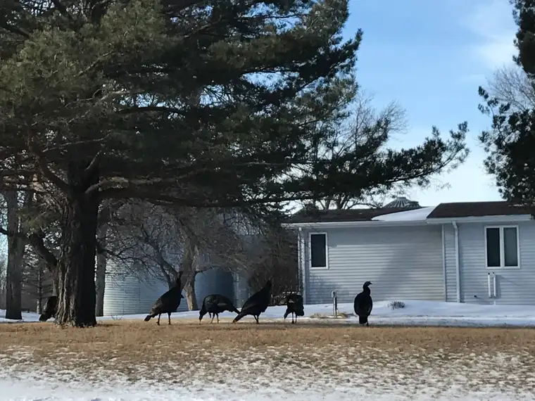
Their pilgrimage from earlier had been imprinted along the road, turkey and tire tracks side-by-side, signs of life sparkling in the snow.
The quiet, slower life I have come to crave announced itself to me in a whisper.
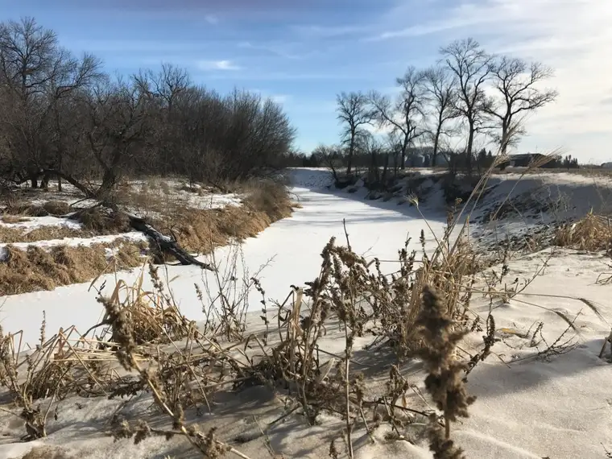
Here at Carmel, the visuals become prominent. My voice takes a rest, too, as I allow the silent, solemn to fill the cracks of my soul.
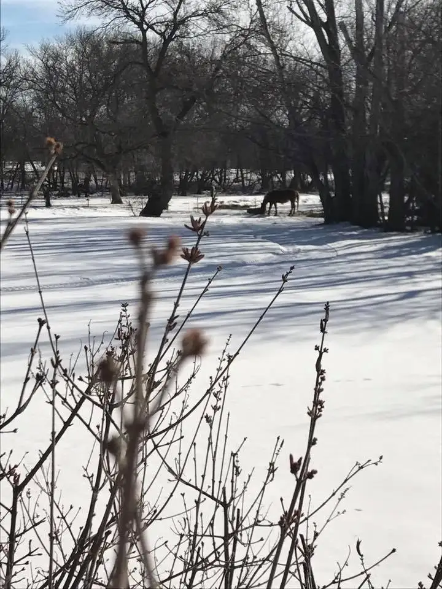
My first moments back in the guest house, I almost instinctively searched for my friend Vicky, who usually accompanies me here. Other commitments have kept her away this go-around. I find myself drawn straight away to the blue room I think of as “hers” now; the one that faces the field where the horse grazes, and the fly…that pesky fly. I know it’s not the same one every time but I feel like it is, welcoming us back. Just me this time, but still I giggle seeing it there on the sill, feeling the laughs Vicky and I have enjoyed here.

Later, advancing again toward the house after a meal, the horse paused. He has a connection with Vicky, and, seeing she wasn’t with me (I’m almost sure), he went back to his grazing, unimpressed that I’d come alone. “Next time I hope,” I said to him.
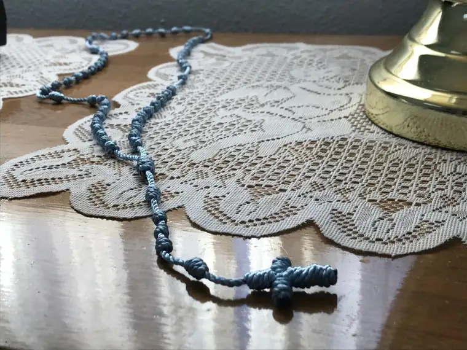
The first day, I usually don’t “do” a lot. I just try to remember how to “be.” I try to remember how to breathe. Thank you, Lord, I say, more than once, maybe even out loud, because I can.
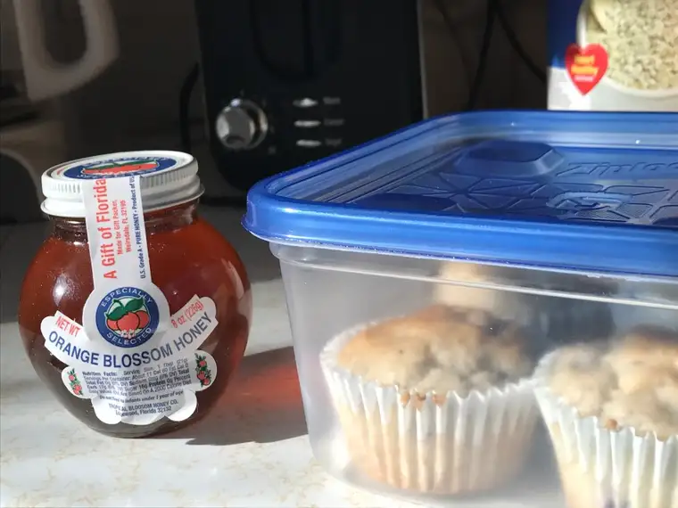
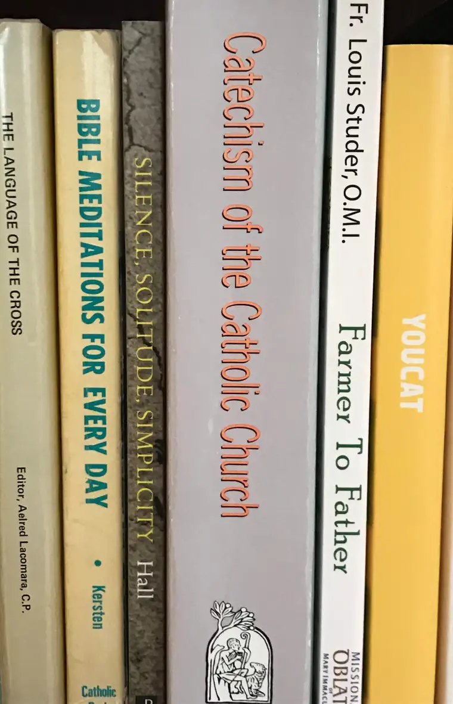
I have been here enough times now to be acquainted with the grounds. You’d think there would be nothing new to see. There are limits to the place, most notably, the Wild Rice River boundary running parallel to the north. Yet every visit, something new pops out — something I hadn’t seen before, or not quite this same way.
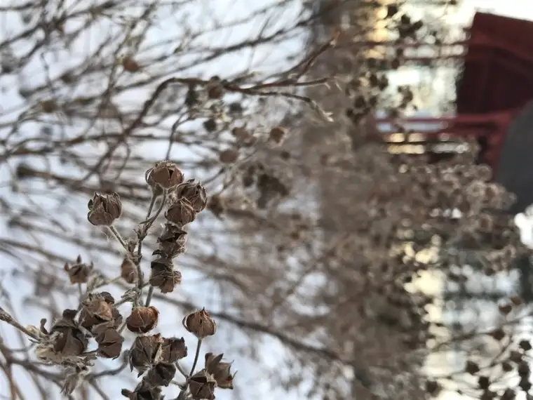
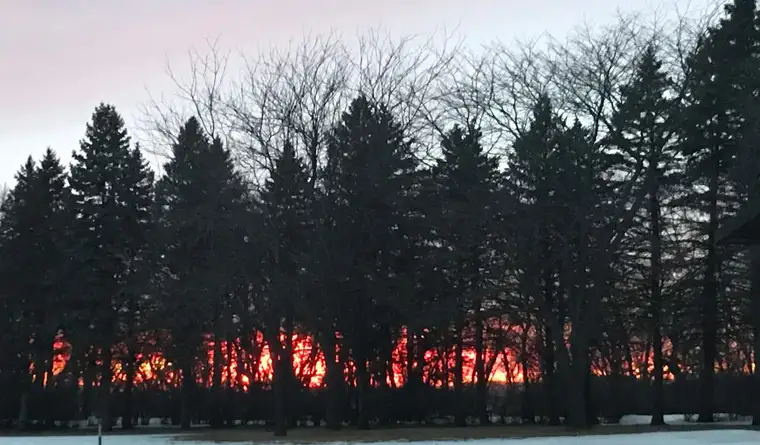
The sky here never fails to amaze me, either. How is it always so surprising? How could it be so varied and interesting?
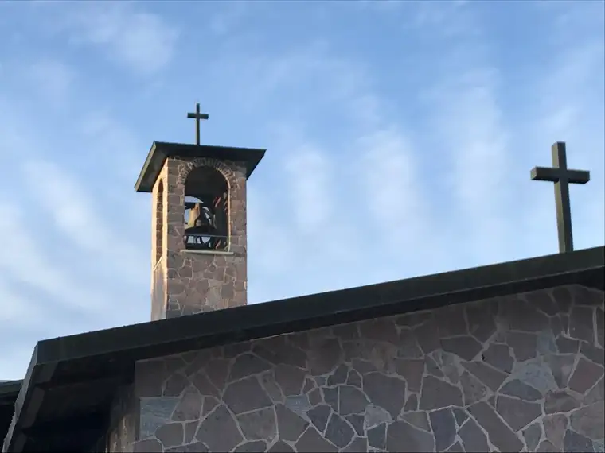
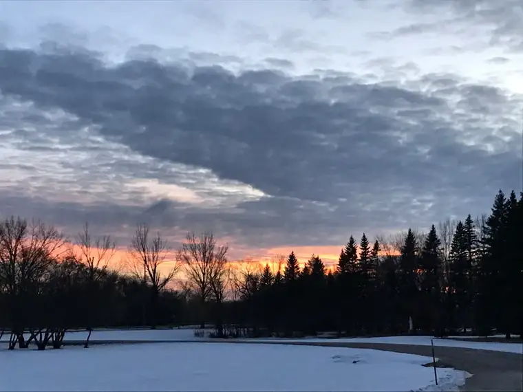
The weekend of my most recent visit, one of the sisters was celebrating the 60th anniversary of her solemn profession — her diamond jubilee — so the midday meal included some special treats. She joined the cloister at 18 years of age. Think of all that has happened in that time, on the outside, and on the inside as well. I can’t begin to comprehend it, but she shared a little with me in a visit later; how the cloister used to be within the city of Wahpeton, and how noisy it was then, and how different it was to come to this quiet place by the river.
I enjoyed my Reese’s blizzard through silent smiles while the sisters, in another room away from me, enjoyed theirs in their little, secluded community of love.
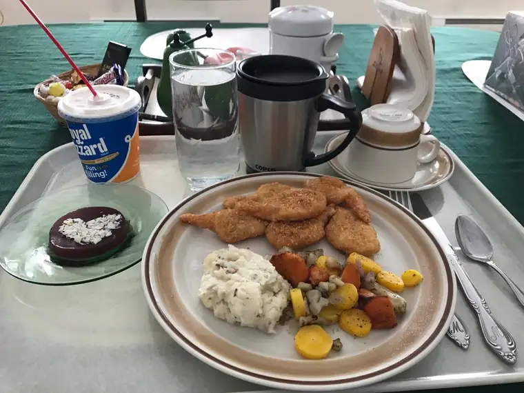
Of course, I can never not visit her, Our Lady of the Prairie. This time, I was struck by her merciful posture…
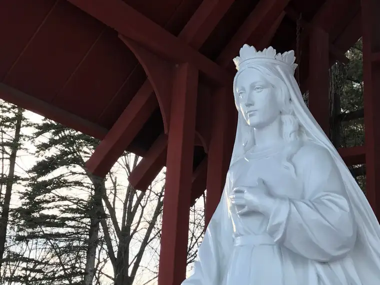

She is such a light of life and sweetness.
My last hour or two always involve tidying up the guest house, and preparing the list of prayers that I’ve collected before and during my stay to present to the sisters. I feel somehow that their flight to God is faster from here. It is a blessing to have this place to bring them.
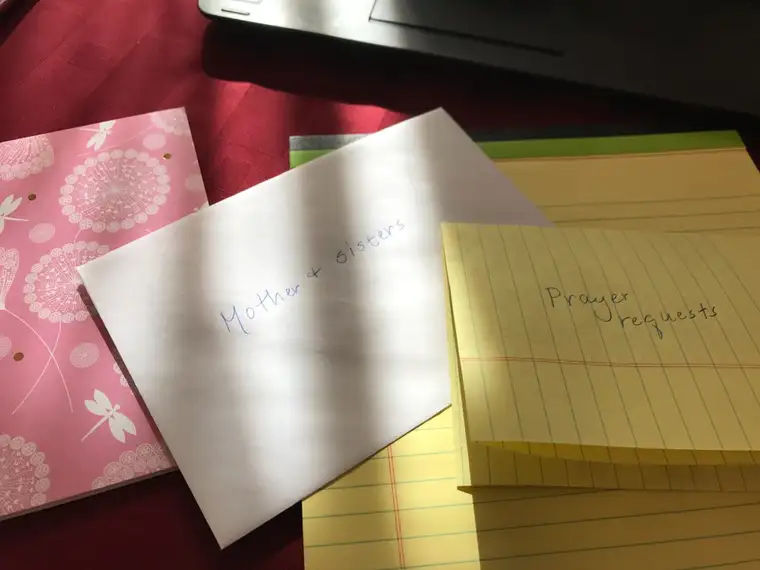
The world is noisy and divisive right now, but God is with us. It feels even more certain from this vantage point.
Now, back home, I’ve already received a note from the sisters. Mother says they miss me, and of course, the same is true in reverse. Life for them goes on. There are prayers to sing, and duties to carry out, and Masses to attend.

My life, too, beckons. I hadn’t left yet when the inquiries from home began dinging on my cell phone. “When are you coming home?” “What time will you be back?” “What’s for dinner?”
And the sisters, I know, have the same tugs, because when I talked to Sister Margaret Mary the evening of her special day, after a while she said, “Well, I’d better go now. I need to get back to the sisters.”
People need us, and that’s a good thing. It makes life move, and gives us purpose. It keeps the living in us happening.
But oh, the pauses in between are worthwhile.
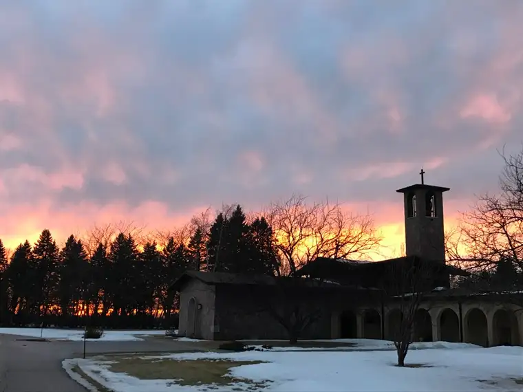
Q4U: How did you calm down recently?